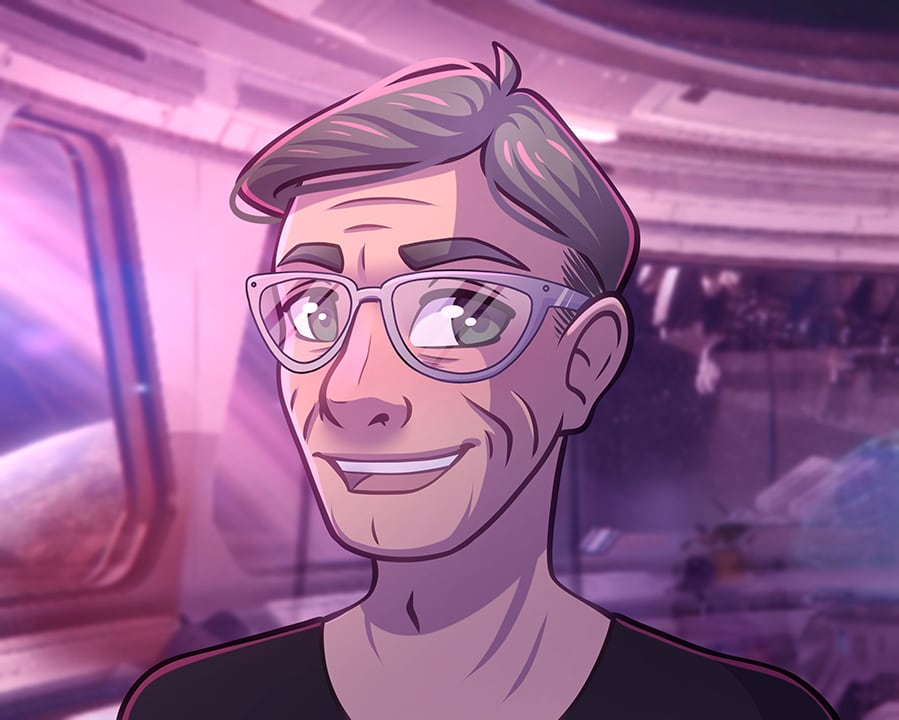
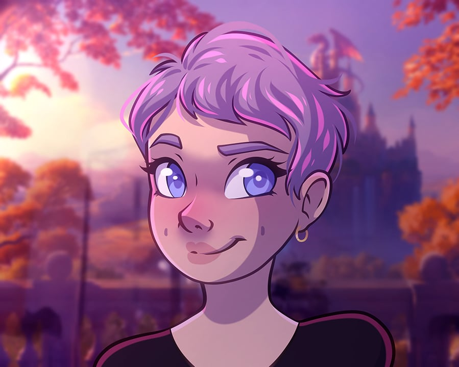
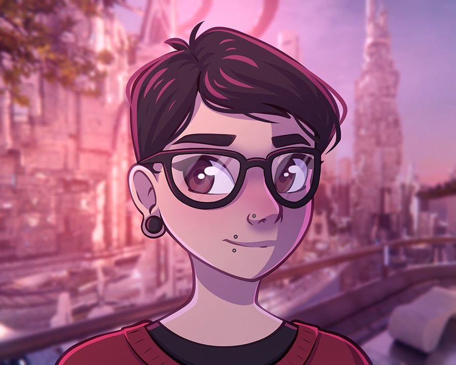
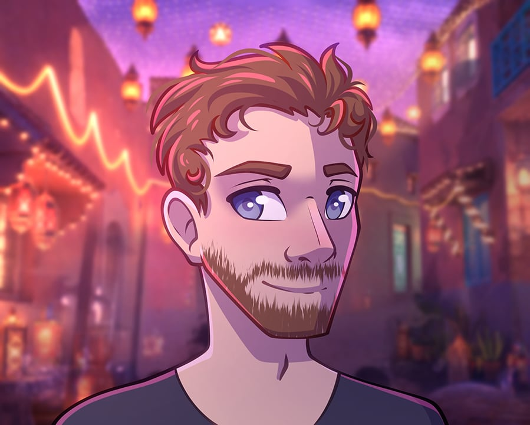

adventurers, philosophers, dreamers, artists
About
At Plastic Words, we create communications that resonate with your audience. We blend innovative tools with tried-and-true storytelling techniques to create unique and impactful communication assets. From website copy to social media content, we ensure your messaging is purposefully developed and effectively delivered.
It all started when Mike Vallender decided he’d seen enough spreadsheets and business plans. He returned to university and enrolled in a creative writing degree. He met Rory and Ashleigh on campus and pitched Plastic Words, a place to connect skilled writers to organisations that need creative, strategic communication. We met Christian and Tim and worked on a couple of great projects, and we are now aiming to scale up our operations.

Mike Vallender _the Captain
Mike is a professional technologist, experienced company director, and passionate creative writer. He recently completed his BA (Hons) in English and Literary studies at UWA and is completing his Masters in Strategic Communications. Mike is passionate about strategic communications and corporate storytelling and would love to help tell your story.

Ashleigh Taylor _the First Mate
An accomplished project lead, Ashleigh is fascinated by politics, law, and what it takes to govern and operate corporate entities. Currently completing her LLB + BA, majoring in Global Politics and Policy, Ashleigh’s love of corporate law and digital publishing makes her a perfect fit for Plastic Words. Ashleigh leads our grant management and administration processes.

Rory Banks _the Communications Officer
Rory is a skilled writer in the technical and creative spaces. Currently completing a Bachelor’s Degree in Creative Arts, Rory is working on the best way to get information across in an accessible and succinct manner. Rory has been publishing short fiction and essays online since 2014 and started working in editing and copywriting in 2018. He loves to work on stories of the real world and get at the guts of how to tell them.
Christian Mauri _the Surgeon
Dr. Mauri has worked as a researcher at several international universities in sociology, higher education, and human factors. Thanks to his talent for replacing technical jargon with clear prose, his numerous international publications continue to be cited by academics and practitioners worldwide. Leaving higher education in 2020, Christian founded Family Tales to help families and businesses share their stories with loved ones and stakeholders. The reputation of this creative work attracted an invitation to join the Plastic Words team.

Tim Robinson _the Digital Architect
Tim started his career in corporate insolvency and restructuring. He now spends his days moving between VS Code and Photoshop, having joined the Plastic Words team in 2023 as the Digital Architect. Tim has also developed a rich creative life through photography and fiction writing. He holds degrees in philosophy, English, accounting, and finance. If you’re in a National Geographic mood, please visit Tim’s personal website: timothyrobinson.net